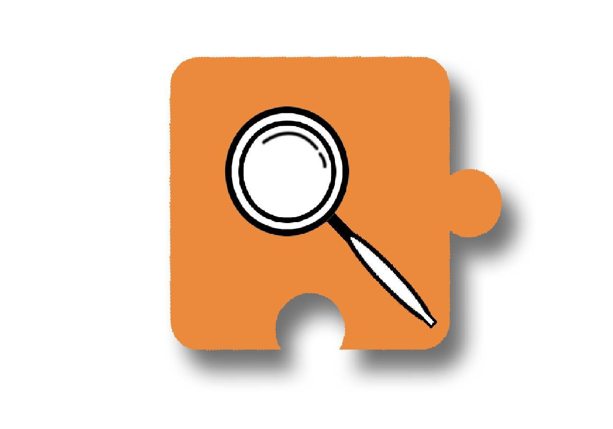
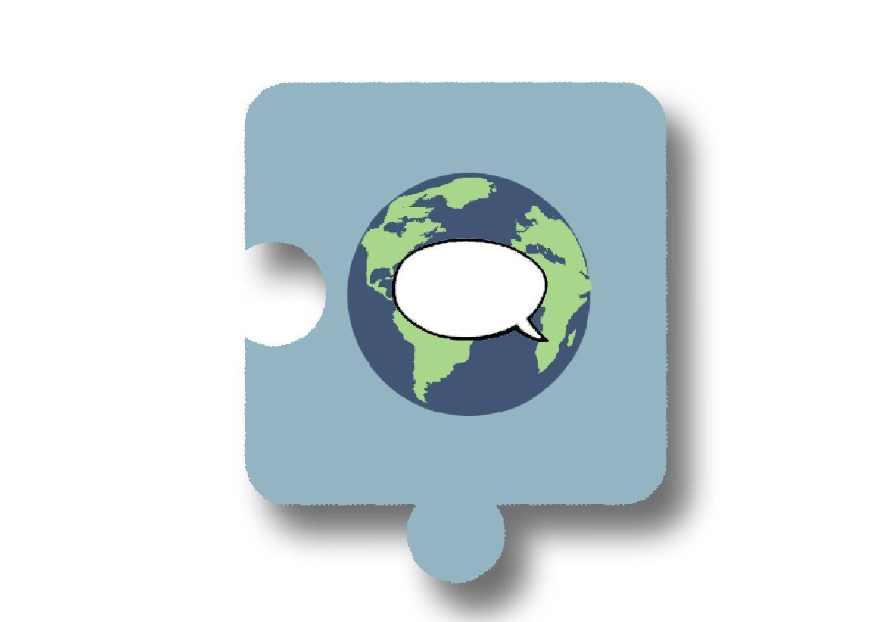

Committees
Parts of the club that make us whole
What are committees?
Committees are ....
Current Committees


| ResearchThe research committee is a research platform for students at San Jose State University. We focus on topics like sustainability and development technological development. This committee is a great way to get research experience, connections to internship opportunities, and to help build a research foundation at SJSU. | ProjectsWhere’s the fun in just writing things down on paper. NEED is all about making a physical impact. The projects committee is what turns research into reality. The projects committee is composed of bright and motivated thinkers who work in sub-teams with the rest of NEED to analyze project feasibility and research before undertaking the physical goal of completing the projects. The end result of this committee is a physical product to be used by others to make the world and more environmentally friendly place. | OutreachThe Outreach Committee is responsible for connecting our club to all students and faculty at SJSU, other universities, non-profit institutions, and engineering companies. Staying connected through email, social media, newsletters, and updates is how the Outreach Committee helps this club. Anyone who joins the Outreach Committee will gain valuable experience in communicating with industry professionals, NEED’s executive board, other universities, and peers alike. A person in the Outreach Committee should continuously advertise and make connections with other clubs, peers, and professors on campus. The Outreach Committee will be a main point of communication for everyone inside and outside of SJSU when planning general meetings, large events, and small events. If you are interested in joining the Outreach Committee for NEED, then please select this committee choice when filling out your application. |